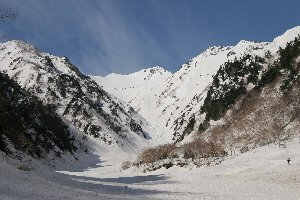
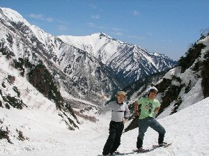
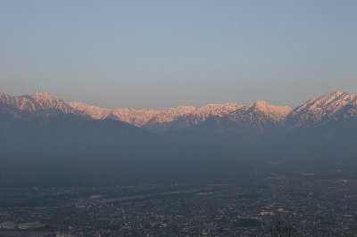

針ノ木雪渓 山スキー | 2006年5月 |
|---|---|
| ＧＷに何処か遊びに行きたいと思って、友人maxに連絡を入れると、「針ノ木」滑りに行こう。と言い出した。 針ノ木が何処に有るかも知らなかったので、急いでネット検索をかけると、日本三大雪渓に数えられるほどのメジャーな場所らしい事が分かりました。（針ノ木岳：富山県と長野県の県境に位置し、北アルプスの一つ、標高2820ｍ、黒部ダムの直ぐ東側の山。長野県大町市） しかし、山スキーなんてやったことないし、道具も無い。それはmaxとて同じことだが、まあ、スキー板はザックにくくり付けて、スノーシューで登ればいいや。と、話はまとまった。 出発（夜出発なので）の朝、新聞で「針ノ木雪渓で雪崩。3人死亡」と言う記事が目に飛び込んできました。 これは、やばいか？ 急いでmaxにメールを打つ。彼は「様子見で、やばそうだったら違う場所で」と言うことでした。 | |
 駐車場にて出発の準備 |  出発まもなく。真正面が針ノ木方面 |
| まあ、ここまで準備して行かないのもなんなので、行ってみようと言うことになり、仕事が終わった夜９時半に出発。夜の２時に大町市のコンビニで仮眠する。 朝４時起床。（って言うか2時間しか寝て無いじゃん。眠い・・・） コンビニで朝食と昼飯を買い、黒部の玄関口、扇沢駅に到着が５時、空は明るくなって来ていました。駐車場は既に混み合っていて、板を担いだ人達が扇沢駅方面に歩いています。 なんだ、結構針ノ木行く人いるじゃん。一安心をして、自分達も針ノ木へ行く準備をし駅方面に行きます。 ザックにスキーブーツ、カメラを入れ、スキー板（もちろんゲレンデ用）とスノーシューをくくり付けると、はっきり言って重い。（私はこの時点で、登山靴を忘れたことに気づく。玄関に置いて来たのだ。maxの予備靴を借りる事にする） 扇沢駅まで行くと、実際は針ノ木に行く人達は居なくて、みんな黒部のトロリーバスへ向かっていました。 針ノ木へは僕らの他に、ベテランそうで山スキーを担いだおじさん一人だけです。 雪が有るか心配していましたが、初めからスノーシューを履いての行軍となり、要らぬ心配でした。 反対に、砂防ダムが有ると思われる沢には、雪崩の跡と思われる雪の塊が、大量に埋め尽くされていました。なぜか真中だけが、スキー場のコースの様に均されています。歩きやすそうでは有ったが、危険な香りがしたので（雪崩が来るかも知れないし、雪の下には沢が流れているはず）沢の横を登って行く事に。（6時ぐらい出発） そんな沢を1時間半位登ると、大沢小屋に到着します。 大沢小屋から上は、ちょっとした広場のように、なだらかな斜面が広がっています。小屋のおじさんが布団を干していました。今日も暑くなりそうだ。気温が上がれば雪崩の危険は増す為、10時まで登ったら終わりにしよう。と決めました。 | |
|  大沢小屋付近からの針ノ木岳（真ん中） |  日がメチャ眩しい〜 |
| 沢の向こうに針ノ木岳が見えます。かなり雄大な山で、大きくそそり立っていました。沢は上に行くほど細くなり、真新しい雪崩の後が見えました。これが二日前の雪崩跡のようです。 結局、その雪崩跡まで進み、時間となったので引き返す事にしました。 雪崩は、氷の塊のように硬く、そして大きく、横一杯に広がっていて、当時のすさまじさ、恐怖を感じました。我々ものんびりしていられません。気温はドンドン上がってきています。maxなど既に半袖です。 このあたりで、新たに2名の方が針ノ木へ登って行きました。やはり、おじさん単独です。 雪崩横で三人の方のご冥福を祈り、スキーに履き替え滑り始めました。（10時半） 雪は少し溶けていましたが、快適に滑れました。雪の塊は硬くて、板が当たると弾き返される程です。 | |
 帰りはスキーで。 横に見える雪崩痕が二日前のものです。 |  カシミール３Ｄで表示。赤線が今回歩いた場所（GPSにて取得） |
| しかし、この絶景！ ゲレンデでは有りえない、雄大な山々を縫うように滑れる様、苦労して登った斜面を瞬時に下れる快感は、たまりません〜。ブーツと板を履いているので、背中は軽いし、気温は程よく気持ちが良いです。 シュルシュルと気持ち良く滑っていたら、1時間掛からないで、扇沢駅に着いてしまいました。結局お昼は駐車場で食べました。 | |
|  鷹狩山より北アルプスを望む（朝焼け） |  大町公園にて |
| その日は近くの温泉（明日香荘）に浸かり、鷹狩山山頂(1164m)にてテントを張って寝ました。今日はのんびり寝れます。 翌日、あさ4時半起き。 なぜ、こんなに早く起きるかと言うと、今日は撮影日なのです。鷹狩山からは北アルプスが一望出来て、絶好の撮影スポットです。（かなりのカメラマンが居ました） 朝焼けに染まる北アルプスを撮り、その後大町公園に降りて、静岡では終わってしまった桜を撮影しました。 この時期に桜を撮れるなんて、素晴らしい〜〜 北アルプスと桜をパチリ。（パチリって死語だろ） 朝食をマックで食べて、そのまま静岡へ。昼食を、某グループ推薦の「南部路」にて食して今回の旅行（？）は終了〜 濃縮された旅でしたが、その分満足度は大きかった。企画サンクスですmax。 | |
 もう一つ大町公園にて |  帰りの豊科IC手前のドライブイン向かえで |
| 写真＆コメント ｂｙ べっしー | |